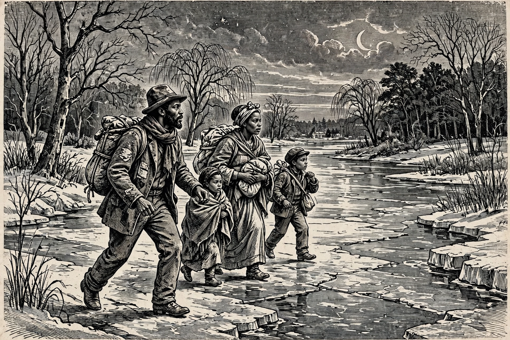

| Margaret Garner | |
|---|---|
| Born | c. 1834, Kentucky, U.S. |
| Died | c. 1858 |
| Known for | Escape from slavery; 1856 Cincinnati trial |
| Spouse | Robert Garner |
| Enslaver | Archibald K. Gaines |

Margaret Garner (c. 1834 – c. 1858) was an enslaved African-American woman in pre–Civil War America who became nationally known for an act of desperate violence during her family's escape from slavery. In January 1856, she fled with her husband Robert and their children from Kentucky across the frozen Ohio River to Cincinnati, Ohio. When slave catchers and U.S. marshals cornered the family, Garner killed her two-year-old daughter Mary with a butcher knife rather than allow the child to be returned to slavery.
The Garners escaped from the Maplewood plantation of Archibald K. Gaines in Boone County, Kentucky, along with other enslaved families, and took refuge in the house of a free Black man, Elijah Kite. When the pursuers arrived, Robert Garner resisted with a pistol, wounding a deputy. Margaret, having declared she would kill her children and herself before being taken back, killed her daughter and attempted to kill her other children and herself before being overpowered.
The ensuing legal proceedings in Cincinnati became a flashpoint in the national conflict over the Fugitive Slave Act of 1850. Abolitionist lawyer John Jolliffe sought to have Garner tried for murder under Ohio law, arguing she was a person before the law and that a murder charge — even with its terrible stakes — would establish her personhood and keep her from being returned. Federal Commissioner John L. Pendery ruled instead that the Fugitive Slave Act took precedence, and the Garners were remanded to Gaines. En route south by steamboat, a collision on the river drowned Garner's infant daughter; Margaret reportedly showed relief rather than grief.
Garner's story became one of the most widely reported slavery cases of the era and a powerful abolitionist symbol. It inspired Thomas Satterwhite Noble's 1867 painting The Modern Medea, and more than a century later formed the basis of Toni Morrison's 1987 novel Beloved, which won the Pulitzer Prize for Fiction, and of Richard Danielpour's 2005 opera Margaret Garner, with a libretto by Morrison.
Fugitive Slave Act of 1850 · Beloved · Toni Morrison · Underground Railroad · Slavery in the United States